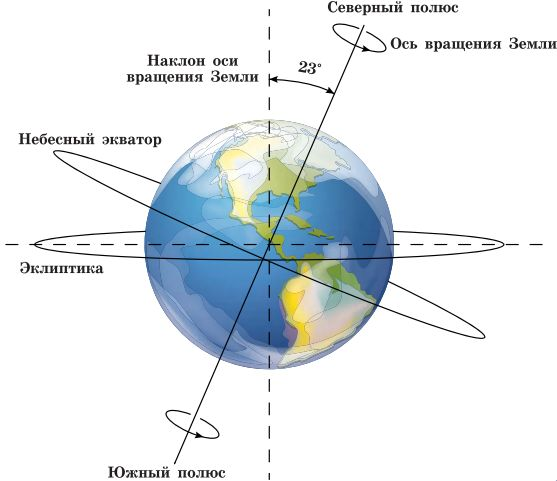
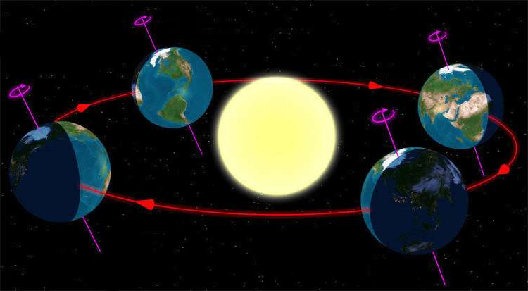
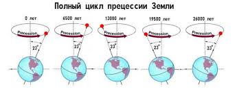

Движение Земли в космосе
Земля — не просто шарик, стоящий на месте. Она постоянно движется и совершает сложные движения в пространстве, которые определяют смену дня и ночи, сезонов и климатических особенностей.
Вращение вокруг своей оси
Одно из самых важных движений — вращение Земли вокруг своей оси. Эта ось наклонена примерно на 23,5 градуса относительно плоскости её орбиты. Благодаря этому вращению мы получаем смену дня и ночи каждые 24 часа. Скорость вращения на экваторе достигает около 1670 километров в час.
Орбитальное движение вокруг Солнца
Земля движется по эллиптической орбите вокруг Солнца со средней скоростью около 30 километров в секунду. Один полный оборот занимает примерно 365,25 дней, что и составляет календарный год. Наклон оси Земли относительно орбиты и её движение создают смену сезонов — весны, лета, осени и зимы.
Прецессия и другие движения
Кроме основных движений, Земля испытывает прецессию — медленное изменение направления оси вращения, которое происходит примерно за 26 тысяч лет. Это влияет на долгосрочные климатические циклы и ориентацию звёзд на небе.
Понимание движений Земли помогает не только в астрономии, но и в навигации, климатологии и многом другом. Это одна из ключевых тем для понимания нашей планеты и её места во Вселенной.